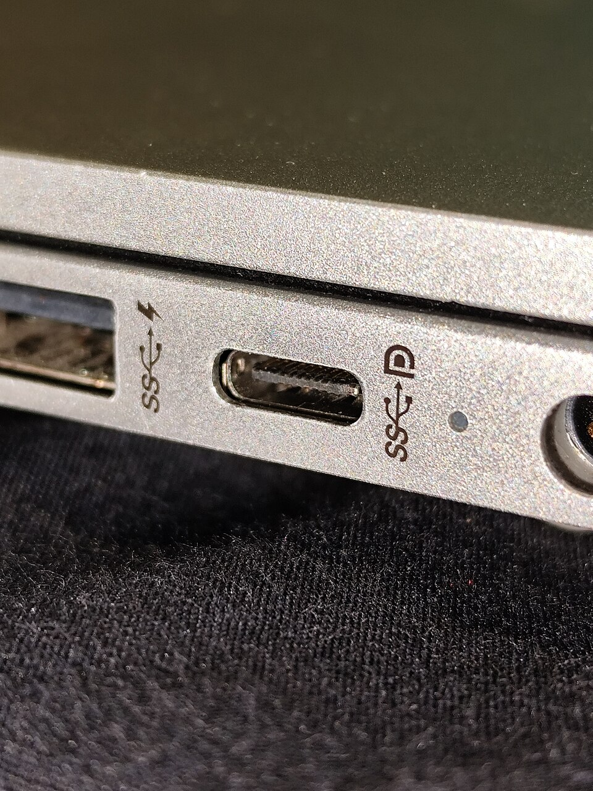

Find why a USB-C laptop will not charge
Compare the charger, cable, supported port and firmware report before sending a laptop for board diagnosis.
Read the input, cable and port requirements
Find the exact laptop’s power input specification and ports that are meant to accept charge. A USB-C port may support data, display or power in different combinations. A charger may advertise a total rating shared among several outputs. Use the laptop’s approved charger and cable as the reference. For the test record, write the printed output profiles, which charger output is used, the cable ID and the laptop input port. T29 · USB-C attachment and power negotiation · USB-IF cable logos and ratings.

Photo by Logant547, scaled with on-page callouts. Original photo · CC BY 4.0.


Photo by Tony Webster, scaled with on-page callouts. Original photo · CC BY 2.0.
.jpg){kind=link}
Watch. Use the opening minute to identify the BIOS adapter-status field while a compatible supply is attached. Names and navigation vary between models. Dell Support’s adapter and battery check on YouTube.
Change exactly one part of the charging path
Record the battery state of charge and whether any charge limit is active. Use a normal mid-range state when testing a good laptop, because a healthy system may pause near its charge limit. Disconnect the dock and unnecessary charger loads. With the laptop off or idle, use the known-good direct charger, cable and designated port. Then check the manufacturer’s firmware or system diagnostic for the adapter status, and note whether battery state rises under a light repeatable load over a fixed interval.
Compare another supported port on the same laptop if the model has one. Then substitute one compatible cable or charger while keeping load and battery conditions similar. Retest the good configuration between changes. A port that fails with two supported combinations while another works is an input-path lead. Use a light for exterior inspection and stop if the port is damaged or heats abnormally.
When you have a rated, compatible passive USB-C power monitor, compare the link with and without it. The meter can disturb the very negotiation you are testing. Record the observed VBUS and current together with the firmware status. If you have no meter, the adapter detection and battery trend are already valid evidence. Use only normal charger negotiation. Keep triggers, bare probes and forced voltages out of the laptop input.
An example 65 W adapter might offer 20 V at 3.25 A. A standard 3 A cable limits that example at 20 V to 60 W. A suitable electronically marked 5 A cable, approved source and laptop still have to agree a supported profile. A rating alone does not tell you which contract the equipment actually selected. Some high-wattage laptop modes are model-specific.
Use the result to decide the next boundary
| Repeatable observation | Best next check |
|---|---|
| Expected adapter recognised directly, unrecognised through the dock | Check the dock’s upstream port, input supply, pass-through power budget and approved cable. The laptop passed the direct comparison. |
| One port accepts the good source and one designated charging port does not | Verify the model’s port capabilities and identify that port’s module or board path in the service manual. |
| 20 V observed, firmware recognises the adapter, battery stays at its configured limit | Confirm the charge policy before replacing hardware. Repeat below the documented threshold if appropriate. |
| Known compatible equipment stays near 5 V and the laptop never detects charging | Repeat the same test without the monitor on an approved port. Check the charger and cable on known-good equipment. Escalate the laptop input once the reference path is proved. |
Keep the order charger → cable → input → detected power → charger path → battery. Laptop models vary in what preboot information they expose. Do not flash firmware as a test on an unstable power path. Once the input has been proved, use the board rail lesson or battery protection theory. Dell example of adapter identification in firmware.
Save the label profile, connection combinations, firmware and battery observations, and the first boundary that fails.